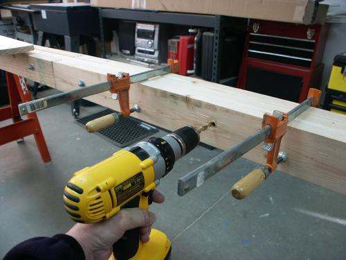
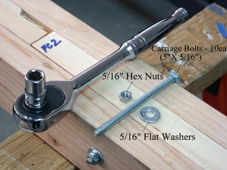

| Strongback - Assembly | Menu Previous Page Next Page |
|

2. Clamp the 2x4's in the sequence described in step 1. Mark and drill the carriage bolt holes. Drilling can be done on the floor, a workbench, or on sawhorses.
|

3. 5" x 5/16" carriage bolts (10 ea) are required. Flat washers and 5/16" hex nuts tighten the bolts in place. Bolts are used, as they allow breakdown of the strongback for storage.
|